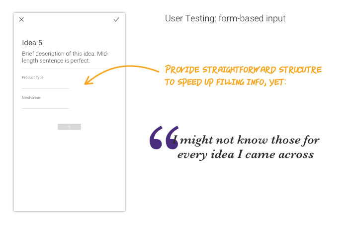
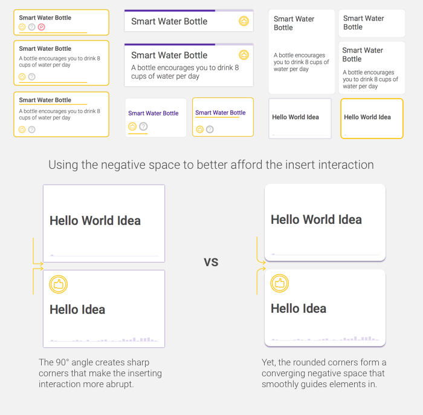
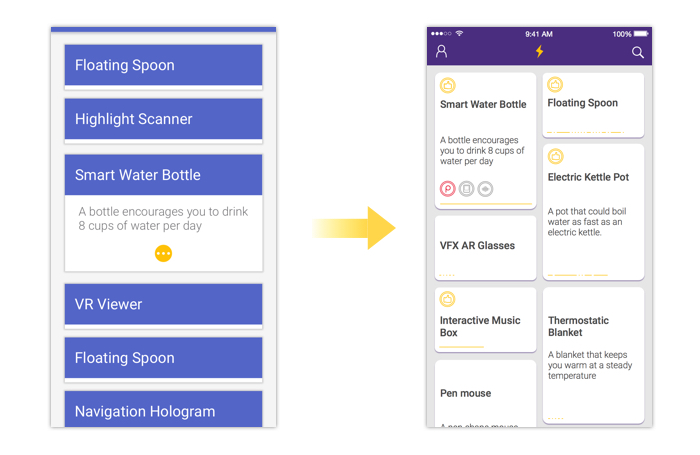
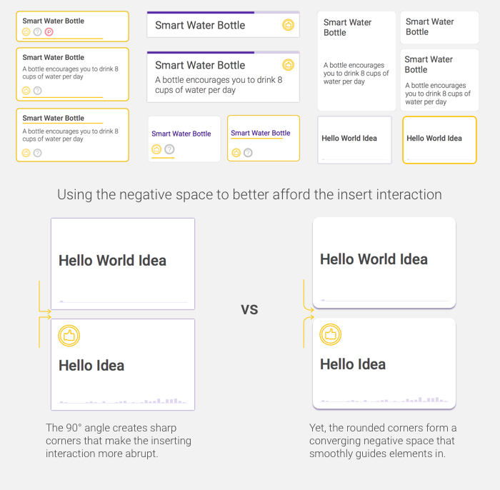
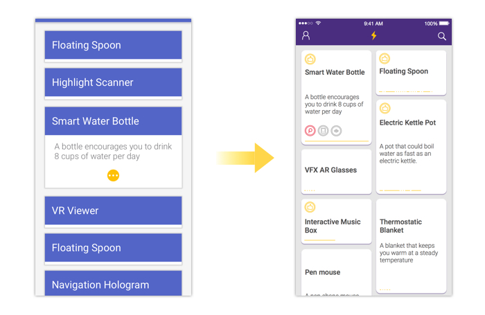

Flash
Market Research, Usability Study, A/B Testing, Follow-up Interview


To speed up the process of documenting information of a new idea, I relate that to filling a form, which has predetermined fields, so that users could fill out an organized idea quickly.
Yet, although I account for the fact to minimize the numbers of fields and only leave the ones that users always fill out, the pattern is not consistent throughout testing.


I don’t really go back and think what I put in before. Instead, I search whatever I can think of at the moment.
- Anonymous A/B testing participant
I wish it's more active, like helping me develop my ideas.
- Anonymous testing participant
As I am smoothing out the user flow with the app, a new insight kicks in: to make it more active, which is a valid point and component as part of the idea collecting process.
 




The thumb zone changes as screen size increases, which also changes the ergonomics. I therefore consider the reachability and try to include the core functionality within the natural/stretch zone.

Although spotlight, highlight and list style have their benefits in showing search result, they all have potential problem during the use. Thus, the small cards view compromises to provide consistent language and allow good amount of parsibility.